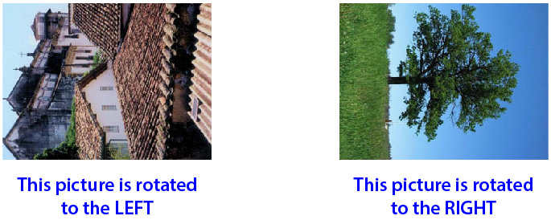
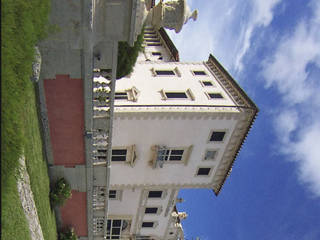
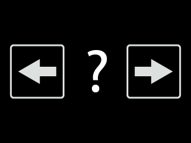

<!DOCTYPE html>
<html>
  <head>
    <title>EIB memoryEIB 2023</title>
    <script src="./js/jquery.min.js"></script>
    <script src="./js/jspsych.js"></script>
    <script src="./js/seedrandom.min.js"></script>
    <script src="./js/plugins/jspsych-rsvp-sequence.js"></script>
    <script src="./js/plugins/jspsych-fullscreen.js"></script>
    <script src="./js/plugins/jspsych-image-keyboard-response.js"></script>
    <script src="./js/plugins/jspsych-html-keyboard-response.js"></script>
    <script src="./js/plugins/jspsych-categorize-image.js"></script>
    <script src="./js/plugins/jspsych-instructions.js"></script>
    <script src="./js/plugins/jspsych-html-button-response.js"></script>
    <script src="./js/plugins/jspsych-demographic-response.js"></script>
    <script src="./js/plugins/jspsych-survey-multi-choice.js"></script>
    <script src="./js/plugins/jspsych-same-different-image.js"></script>
    <script src="./js/plugins/jspsych-survey-text.js"></script>
    <script src="./js/plugins/jspsych-survey-likert.js"></script>
    <script src="./js/plugins/jspsych-survey-html-form.js"></script>
    <script src="./js/welcome.js"></script>
    <link href="./js/css/jspsych.css" rel="stylesheet" type="text/css" />

    <style>
      .fancyButtonRed {
        display: inline-block;
        padding: 15px 15px;
        font-size: 24px;
        cursor: pointer;
        text-align: center;
        text-decoration: none;
        outline: none;
        color: #fff;
        background-color: #af504c;
        border: none;
        box-shadow: 0 9px #999;
      }
      .fancyButtonRed:hover {
        background-color: #8e413e;
      }
      .fancyButtonRed:active {
        background-color: #8e413e;
        box-shadow: 0 5px #666;
        transform: translateY(4px);
      }

      #jspsychTargetMLP {
        text-align: center;
        position: absolute;
        top: 0%;
        left: 50%;
        margin-top: 0%;
        margin-left: -50%;
        height: 100%;
        width: 100%;
        overflow-y: auto;
        overflow-x: auto;
        font-family: "Segoe UI", Arial, sans-serif;
        font-size: 120%;
        color: black;
      }

      body {
        background-color: white;
      }

      html,
      body {
        margin: 0;
        height: 100%;
        width: 100%;
      }
    </style>
  </head>

  <body>
    <div id="jspsychTargetMLP"></div>
  </body>
  <script>
    document.body.style.backgroundColor = "hsl(0,0%," + lightnessVal + "%)";

    Math.seedrandom();
    rSeed = Math.floor(Math.random() * 9999999);
    Math.seedrandom(rSeed);

    //Following consent, participants see 2 negative and 2 neutral items to ensure informed consent
    //Twelve-item neuroticism scale
    //Half the participants informed that negative images are from special effects galleries (show screenshots of webpages)
    //Emotion-induced blindness, with 28 negative, 28 neutral, and 14 baseline trials (all lag 2)
    //Memory test for distractors + 9 negative foils and 9 neutral foils
    //Retrospectively rate the emotional items overall for valence and arousal
    //Debriefed, with a re-statement of #3 (this will be the first time the other half of the participants see this)
    //If participants hit a “terminate experiment” at any point during 1-6, they will be brought to #7.

    //*** declare some global variables

    var today = new Date(); //helpful to have in the data file
    var date =
      today.getFullYear() +
      "-" +
      (today.getMonth() + 1) +
      "-" +
      today.getDate();
    var time =
      today.getHours() + ":" + today.getMinutes() + ":" + today.getSeconds();
    var dateTime = date + " " + time;

    var realVersion = true;
    var jatosVersion = true;
    //var instructVersion = Math.round(Math.random()); // 0 = no instructions and 1 = given fake/staged instructions
    //console.log(instructVersion);

    var subject_id = jsPsych.randomization.randomID(5); // generate a random subject ID with 5 characters

    var resultsID = 0;

    var winWidth = 800; //800

    var focusCheckInterval = 1000;

    var itemsPerStream = 16;

    var earliestDistractPosition = 4; // Arrays are zero-indexed, so these are the 3rd and 10th positions - BECAUSE WE ARE ONLY DOING LAG 2! Reduce last position if including longer lags
    var latestDistractPosition = 9;

    // This next bit gets the results ID, which will be passed in the parameters in the URL
    // It uses code from https://www.xul.fr/javascript/parameters.php
    if (location.search.substring(1)) {
      //USEFUL_BIT
      var parameters = location.search.substring(1).split("&"); //USEFUL_BIT
      var temp = parameters[0].split("="); //USEFUL_BIT
      if (temp[1]) {
        resultsID = unescape(temp[1]);
      } //USEFUL_BIT
    } //USEFUL_BIT

    var numBlocksTotal = 2; //in this experiment we only want to show the 28 neg + 28 neutral pics once so we only have two blocks (normally you'd have more).
    var quitButtonCount = 0; // in this variation of the task, if the pp pushes q a anytime it will skip to the debrief.
    var quitPlease;

    if (realVersion) {
      var trialsPerDistractCond = 20; //PerBlock How many trials per condition (14 x neut/14 x negative) x 2 blocks
      var numDistractConditions = 2; // neut and negative in this experiment.
      var trialsPerBaselineType = 20; // PerBlock How many baseline trials
      var initialPauseDuration = 1000; // 1000
      var itiDuration = 500; // 500
      var fixationDuration = 500; // 500
      var feedbackDuration = 1000; // 900

      var finalStandardDuration = 100; // 100
      var finalDistractDuration = 150; // 100

      var pracDurSteps = [500, 250, 150, 100, finalStandardDuration]; //   [500, 250, 150, 100, finalStandardDuration]
      var pracNperstep = 2;

      var firstPracTrialDur = 750; // 750
      var numMemBlocks = 1; // how many blocks should we split mem trials (with breaks) into. Note that mem trials should be divisable by 4!
      var numMemPics = 40; //This is number of mem trials for each negative/neutral condition (not foils).
      var numFoilPics = 10; //This is per emotion condition - so 9 negative + 9 neutral pics left over to act as foils in the memory task [STEVE: CHANGE THIS AS APPROPRIATE FOR MEMORY TEST]
      var memConditionsTotal = 4; //1 = neg old 2 =  neg_foils, 3 = neut old, 4 = neut foils.
    }
    /*else {
      var trialsPerDistractCond = 4; //PerBlock How many trials per condition (neut/negative)
      var numDistractConditions = 2; // neut and negative in this experiment
      var trialsPerBaselineType = 2; // PerBlock How many baseline trials
      var initialPauseDuration = 100; // 1000
      var itiDuration = 500; // 500
      var fixationDuration = 500; // 500
      var feedbackDuration = 800; // 900

      var finalStandardDuration = 100; // 100
      var finalDistractDuration = 100; // 100

      var pracDurSteps = [500, 250, 150, 100, finalStandardDuration]; // [10, 10, 10, 10, 10]    [500, 250, 150, 100, finalStandardDuration]
      var pracNperstep = 1;

      var firstPracTrialDur = 750; // 750
      var numMemBlocks = 1; // how many blocks should we split mem trials (with breaks) into. Note that mem trials should be divisable by 4!
      var numMemPics = 8; //so 8 each of neg/neutral x old/new
      var numFoilPics = 8; // use 24 negative and 24 neutral pics as foils
      var memConditionsTotal = 4; //1 = neg old 2 =  neg_foils, 3 = neut old, 4 = neut foils.
    }*/

    const actualLagTypes = [2, 4]; //Actually only lag 2 [Steve: change this later]
    let lag_types_by_trial = [];
    for (let i = 0; i < trialsPerDistractCond; i++) {
      lag_types_by_trial.push(actualLagTypes[0]);
      lag_types_by_trial.push(actualLagTypes[1]);
    }
    for (let i = 0; i < trialsPerBaselineType / 2; i++) {
      lag_types_by_trial.push(actualLagTypes[0]);
      lag_types_by_trial.push(actualLagTypes[1]);
    }
    lag_types_by_trial = jsPsych.randomization.shuffle(lag_types_by_trial);

    var pracStdDur = [];
    var pracDisDur = [];

    var numPracticeTrials = pracDurSteps.length * pracNperstep;
    var numPracticeTrialsDigits = 6;

    var tempCounter = 0;

    for (ii = 0; ii < pracDurSteps.length; ii++) {
      for (jj = 0; jj < pracNperstep; jj++) {
        pracStdDur[tempCounter] = pracDurSteps[ii];
        pracDisDur[tempCounter] = pracDurSteps[ii];
        if (ii == pracDurSteps.length - 1) {
          pracDisDur[tempCounter] = finalDistractDuration;
        }
        tempCounter++;
      }
    }

    // ******************* COLLATE FILENAMES FOR PRELOADING ******************
    var numStandardImages = 251;
    var numTargetImages = 120; // 120 images, each in left and right configurations
    var numNegImages = 50;
    //  some will be used for the RSVP task and the rest will be used as foils in the memory task, an additional 2 will be shown at beginning with ethics,
    var numNeutImages = 50; //  some will be used for the RSVP task and the rest will be used as foils in the memory task,

    var typeOfBlock = "";

    let ts = "resources/resized_images/";
    var imageFilenames = [
      ts + "IMG001.jpg",
      ts + "IMG002.jpg",
      ts + "IMG004.jpg",
      ts + "IMG005.jpg",
      ts + "IMG006.jpg",
      ts + "IMG011.jpg",
      ts + "IMG012.jpg",
      ts + "IMG014.jpg",
      ts + "IMG015.jpg",
      ts + "IMG017.jpg",
      ts + "IMG019.jpg",
      ts + "IMG020.jpg",
      ts + "IMG021.jpg",
      ts + "IMG022.jpg",
      ts + "IMG024.jpg",
      ts + "IMG025.jpg",
      ts + "IMG028.jpg",
      ts + "IMG031.jpg",
      ts + "IMG032.jpg",
      ts + "IMG033.jpg",
      ts + "IMG035.jpg",
      ts + "IMG036.jpg",
      ts + "IMG037.jpg",
      ts + "IMG039.jpg",
      ts + "IMG041.jpg",
      ts + "IMG042.jpg",
      ts + "IMG043.jpg",
      ts + "IMG044.jpg",
      ts + "IMG047.jpg",
      ts + "IMG052.jpg",
      ts + "IMG053.jpg",
      ts + "IMG054.jpg",
      ts + "IMG056.jpg",
      ts + "IMG057.jpg",
      ts + "IMG059.jpg",
      ts + "IMG060.jpg",
      ts + "IMG062.jpg",
      ts + "IMG063.jpg",
      ts + "IMG064.jpg",
      ts + "IMG066.jpg",
      ts + "IMG068.jpg",
      ts + "IMG069.jpg",
      ts + "IMG070.jpg",
      ts + "IMG073.jpg",
      ts + "IMG077.jpg",
      ts + "IMG082.jpg",
      ts + "IMG092.jpg",
      ts + "IMG094.jpg",
      ts + "IMG095.jpg",
      ts + "IMG096.jpg",
      ts + "IMG097.jpg",
      ts + "IMG101.jpg",
      ts + "IMG107.jpg",
      ts + "IMG109.jpg",
      ts + "IMG110.jpg",
      ts + "IMG111.jpg",
      ts + "IMG116.jpg",
      ts + "IMG117.jpg",
      ts + "IMG119.jpg",
      ts + "IMG123.jpg",
      ts + "IMG125.jpg",
      ts + "IMG127.jpg",
      ts + "IMG129.jpg",
      ts + "IMG130.jpg",
      ts + "IMG131.jpg",
      ts + "IMG132.jpg",
      ts + "IMG133.jpg",
      ts + "IMG143.jpg",
      ts + "IMG147.jpg",
      ts + "IMG151.jpg",
      ts + "IMG152.jpg",
      ts + "IMG153.jpg",
      ts + "IMG154.jpg",
      ts + "IMG155.jpg",
      ts + "IMG156.jpg",
      ts + "IMG157.jpg",
      ts + "IMG158.jpg",
      ts + "IMG160.jpg",
      ts + "IMG165.jpg",
      ts + "IMG167.jpg",
      ts + "IMG168.jpg",
      ts + "IMG181.jpg",
      ts + "IMG182.jpg",
      ts + "IMG191.jpg",
      ts + "IMG192.jpg",
      ts + "IMG194.jpg",
      ts + "IMG199.jpg",
      ts + "IMG201.jpg",
      ts + "IMG203.jpg",
      ts + "IMG205.jpg",
      ts + "IMG206.jpg",
      ts + "IMG207.jpg",
      ts + "IMG209.jpg",
      ts + "IMG212.jpg",
      ts + "IMG214.jpg",
      ts + "IMG216.jpg",
      ts + "IMG217.jpg",
      ts + "IMG218.jpg",
      ts + "IMG219.jpg",
      ts + "IMG221.jpg",
    ];

    let picStimuli = [
      { stimulus: ts + "IMG001.jpg", data: { pic_type: "Neutral" } },
      { stimulus: ts + "IMG002.jpg", data: { pic_type: "Neutral" } },
      { stimulus: ts + "IMG004.jpg", data: { pic_type: "Neutral" } },
      { stimulus: ts + "IMG005.jpg", data: { pic_type: "Neutral" } },
      { stimulus: ts + "IMG006.jpg", data: { pic_type: "Neutral" } },
      { stimulus: ts + "IMG011.jpg", data: { pic_type: "Neutral" } },
      { stimulus: ts + "IMG012.jpg", data: { pic_type: "Neutral" } },
      { stimulus: ts + "IMG014.jpg", data: { pic_type: "Neutral" } },
      { stimulus: ts + "IMG015.jpg", data: { pic_type: "Neutral" } },
      { stimulus: ts + "IMG017.jpg", data: { pic_type: "Neutral" } },
      { stimulus: ts + "IMG019.jpg", data: { pic_type: "Neutral" } },
      { stimulus: ts + "IMG020.jpg", data: { pic_type: "Neutral" } },
      { stimulus: ts + "IMG021.jpg", data: { pic_type: "Neutral" } },
      { stimulus: ts + "IMG022.jpg", data: { pic_type: "Neutral" } },
      { stimulus: ts + "IMG024.jpg", data: { pic_type: "Neutral" } },
      { stimulus: ts + "IMG025.jpg", data: { pic_type: "Neutral" } },
      { stimulus: ts + "IMG028.jpg", data: { pic_type: "Neutral" } },
      { stimulus: ts + "IMG031.jpg", data: { pic_type: "Neutral" } },
      { stimulus: ts + "IMG032.jpg", data: { pic_type: "Neutral" } },
      { stimulus: ts + "IMG033.jpg", data: { pic_type: "Neutral" } },
      { stimulus: ts + "IMG035.jpg", data: { pic_type: "Neutral" } },
      { stimulus: ts + "IMG036.jpg", data: { pic_type: "Neutral" } },
      { stimulus: ts + "IMG037.jpg", data: { pic_type: "Neutral" } },
      { stimulus: ts + "IMG039.jpg", data: { pic_type: "Neutral" } },
      { stimulus: ts + "IMG041.jpg", data: { pic_type: "Neutral" } },
      { stimulus: ts + "IMG042.jpg", data: { pic_type: "Neutral" } },
      { stimulus: ts + "IMG043.jpg", data: { pic_type: "Neutral" } },
      { stimulus: ts + "IMG044.jpg", data: { pic_type: "Neutral" } },
      { stimulus: ts + "IMG047.jpg", data: { pic_type: "Neutral" } },
      { stimulus: ts + "IMG052.jpg", data: { pic_type: "Neutral" } },
      { stimulus: ts + "IMG053.jpg", data: { pic_type: "Neutral" } },
      { stimulus: ts + "IMG054.jpg", data: { pic_type: "Neutral" } },
      { stimulus: ts + "IMG056.jpg", data: { pic_type: "Neutral" } },
      { stimulus: ts + "IMG057.jpg", data: { pic_type: "Neutral" } },
      { stimulus: ts + "IMG059.jpg", data: { pic_type: "Neutral" } },
      { stimulus: ts + "IMG060.jpg", data: { pic_type: "Neutral" } },
      { stimulus: ts + "IMG062.jpg", data: { pic_type: "Neutral" } },
      { stimulus: ts + "IMG063.jpg", data: { pic_type: "Neutral" } },
      { stimulus: ts + "IMG064.jpg", data: { pic_type: "Neutral" } },
      { stimulus: ts + "IMG066.jpg", data: { pic_type: "Neutral" } },
      { stimulus: ts + "IMG068.jpg", data: { pic_type: "Neutral" } },
      { stimulus: ts + "IMG069.jpg", data: { pic_type: "Neutral" } },
      { stimulus: ts + "IMG070.jpg", data: { pic_type: "Neutral" } },
      { stimulus: ts + "IMG073.jpg", data: { pic_type: "Positive" } },
      { stimulus: ts + "IMG077.jpg", data: { pic_type: "Positive" } },
      { stimulus: ts + "IMG082.jpg", data: { pic_type: "Positive" } },
      { stimulus: ts + "IMG092.jpg", data: { pic_type: "Positive" } },
      { stimulus: ts + "IMG094.jpg", data: { pic_type: "Positive" } },
      { stimulus: ts + "IMG095.jpg", data: { pic_type: "Positive" } },
      { stimulus: ts + "IMG096.jpg", data: { pic_type: "Positive" } },
      { stimulus: ts + "IMG097.jpg", data: { pic_type: "Positive" } },
      { stimulus: ts + "IMG101.jpg", data: { pic_type: "Positive" } },
      { stimulus: ts + "IMG107.jpg", data: { pic_type: "Positive" } },
      { stimulus: ts + "IMG109.jpg", data: { pic_type: "Positive" } },
      { stimulus: ts + "IMG110.jpg", data: { pic_type: "Positive" } },
      { stimulus: ts + "IMG111.jpg", data: { pic_type: "Positive" } },
      { stimulus: ts + "IMG116.jpg", data: { pic_type: "Positive" } },
      { stimulus: ts + "IMG117.jpg", data: { pic_type: "Positive" } },
      { stimulus: ts + "IMG119.jpg", data: { pic_type: "Positive" } },
      { stimulus: ts + "IMG123.jpg", data: { pic_type: "Positive" } },
      { stimulus: ts + "IMG125.jpg", data: { pic_type: "Positive" } },
      { stimulus: ts + "IMG127.jpg", data: { pic_type: "Positive" } },
      { stimulus: ts + "IMG129.jpg", data: { pic_type: "Positive" } },
      { stimulus: ts + "IMG130.jpg", data: { pic_type: "Positive" } },
      { stimulus: ts + "IMG131.jpg", data: { pic_type: "Positive" } },
      { stimulus: ts + "IMG132.jpg", data: { pic_type: "Positive" } },
      { stimulus: ts + "IMG133.jpg", data: { pic_type: "Positive" } },
      { stimulus: ts + "IMG143.jpg", data: { pic_type: "Positive" } },
      { stimulus: ts + "IMG147.jpg", data: { pic_type: "Positive" } },
      { stimulus: ts + "IMG151.jpg", data: { pic_type: "Positive" } },
      { stimulus: ts + "IMG152.jpg", data: { pic_type: "Positive" } },
      { stimulus: ts + "IMG153.jpg", data: { pic_type: "Positive" } },
      { stimulus: ts + "IMG154.jpg", data: { pic_type: "Positive" } },
      { stimulus: ts + "IMG155.jpg", data: { pic_type: "Positive" } },
      { stimulus: ts + "IMG156.jpg", data: { pic_type: "Positive" } },
      { stimulus: ts + "IMG157.jpg", data: { pic_type: "Positive" } },
      { stimulus: ts + "IMG158.jpg", data: { pic_type: "Positive" } },
      { stimulus: ts + "IMG160.jpg", data: { pic_type: "Positive" } },
      { stimulus: ts + "IMG165.jpg", data: { pic_type: "Positive" } },
      { stimulus: ts + "IMG167.jpg", data: { pic_type: "Positive" } },
      { stimulus: ts + "IMG168.jpg", data: { pic_type: "Positive" } },
      { stimulus: ts + "IMG181.jpg", data: { pic_type: "Positive" } },
      { stimulus: ts + "IMG182.jpg", data: { pic_type: "Positive" } },
      { stimulus: ts + "IMG191.jpg", data: { pic_type: "Positive" } },
      { stimulus: ts + "IMG192.jpg", data: { pic_type: "Positive" } },
      { stimulus: ts + "IMG194.jpg", data: { pic_type: "Positive" } },
      { stimulus: ts + "IMG199.jpg", data: { pic_type: "Positive" } },
      { stimulus: ts + "IMG201.jpg", data: { pic_type: "Positive" } },
      { stimulus: ts + "IMG203.jpg", data: { pic_type: "Positive" } },
      { stimulus: ts + "IMG205.jpg", data: { pic_type: "Positive" } },
      { stimulus: ts + "IMG206.jpg", data: { pic_type: "Positive" } },
      { stimulus: ts + "IMG207.jpg", data: { pic_type: "Positive" } },
      { stimulus: ts + "IMG209.jpg", data: { pic_type: "Positive" } },
      { stimulus: ts + "IMG212.jpg", data: { pic_type: "Neutral" } },
      { stimulus: ts + "IMG214.jpg", data: { pic_type: "Neutral" } },
      { stimulus: ts + "IMG216.jpg", data: { pic_type: "Neutral" } },
      { stimulus: ts + "IMG217.jpg", data: { pic_type: "Neutral" } },
      { stimulus: ts + "IMG218.jpg", data: { pic_type: "Neutral" } },
      { stimulus: ts + "IMG219.jpg", data: { pic_type: "Neutral" } },
      { stimulus: ts + "IMG221.jpg", data: { pic_type: "Neutral" } },
    ];

    const IMAGE_FILE_PATH = "resources/resized_images/";
    let neutralEibImages = [
      "IMG036.jpg",
      "IMG012.jpg",
      "IMG002.jpg",
      "IMG044.jpg",
      "IMG031.jpg",
      "IMG011.jpg",
      "IMG037.jpg",
      "IMG006.jpg",
      "IMG033.jpg",
      "IMG217.jpg",
      "IMG221.jpg",
      "IMG005.jpg",
      "IMG053.jpg",
      "IMG024.jpg",
      "IMG052.jpg",
      "IMG022.jpg",
      "IMG062.jpg",
      "IMG042.jpg",
      "IMG001.jpg",
      "IMG068.jpg",
      "IMG019.jpg",
      "IMG218.jpg",
      "IMG035.jpg",
      "IMG057.jpg",
      "IMG028.jpg",
      "IMG017.jpg",
      "IMG054.jpg",
      "IMG064.jpg",
      "IMG047.jpg",
      "IMG216.jpg",
      "IMG214.jpg",
      "IMG056.jpg",
      "IMG021.jpg",
      "IMG015.jpg",
      "IMG043.jpg",
      "IMG212.jpg",
      "IMG059.jpg",
      "IMG032.jpg",
      "IMG004.jpg",
      "IMG060.jpg",
    ].map((filename) => `${IMAGE_FILE_PATH}${filename}`);

    let positiveEibImages = [
      "IMG125.jpg",
      "IMG165.jpg",
      "IMG116.jpg",
      "IMG097.jpg",
      "IMG182.jpg",
      "IMG109.jpg",
      "IMG129.jpg",
      "IMG119.jpg",
      "IMG110.jpg",
      "IMG143.jpg",
      "IMG151.jpg",
      "IMG096.jpg",
      "IMG152.jpg",
      "IMG156.jpg",
      "IMG154.jpg",
      "IMG131.jpg",
      "IMG207.jpg",
      "IMG147.jpg",
      "IMG117.jpg",
      "IMG167.jpg",
      "IMG203.jpg",
      "IMG181.jpg",
      "IMG155.jpg",
      "IMG160.jpg",
      "IMG205.jpg",
      "IMG123.jpg",
      "IMG157.jpg",
      "IMG094.jpg",
      "IMG191.jpg",
      "IMG077.jpg",
      "IMG201.jpg",
      "IMG095.jpg",
      "IMG111.jpg",
      "IMG132.jpg",
      "IMG133.jpg",
      "IMG073.jpg",
      "IMG209.jpg",
      "IMG158.jpg",
      "IMG194.jpg",
      "IMG107.jpg",
    ].map((filename) => `${IMAGE_FILE_PATH}${filename}`);

    let negativeFoilImages = [
      "IMG092.jpg",
      "IMG130.jpg",
      "IMG153.jpg",
      "IMG199.jpg",
      "IMG168.jpg",
      "IMG192.jpg",
      "IMG082.jpg",
      "IMG101.jpg",
      "IMG127.jpg",
      "IMG206.jpg",
    ].map((filename) => `${IMAGE_FILE_PATH}${filename}`);

    let neutralFoilImages = [
      "IMG025.jpg",
      "IMG066.jpg",
      "IMG041.jpg",
      "IMG070.jpg",
      "IMG069.jpg",
      "IMG020.jpg",
      "IMG063.jpg",
      "IMG039.jpg",
      "IMG219.jpg",
      "IMG014.jpg",
    ].map((filename) => `${IMAGE_FILE_PATH}${filename}`);

    //var neutralFoilImages = [];

    var standardFilenames = [];
    for (ii = 0; ii < numStandardImages; ii++) {
      standardFilenames[ii] = "images/standards/standard" + ii + ".jpg";
    }
    imageFilenames = imageFilenames.concat(standardFilenames);

    var target0Filenames = [];
    for (ii = 0; ii < numTargetImages; ii++) {
      target0Filenames[ii] = "images/targets/target" + ii + "_0.jpg";
    }
    imageFilenames = imageFilenames.concat(target0Filenames);

    var target1Filenames = [];
    for (ii = 0; ii < numTargetImages; ii++) {
      target1Filenames[ii] = "images/targets/target" + ii + "_1.jpg";
    }

    imageFilenames = imageFilenames.concat(target1Filenames);

    imageFilenames = imageFilenames.concat("images/target_example_white.jpg");

    // ******************* CREATE AND SET VARIOUS USEFUL VARIABLES ******************

    var trialDistractType = 3; //  Initialize as 3 so that all practice trials recorded as baseline type.
    var trialDistractPos;
    var trialLag;
    var trialStandardDuration;
    var trialDistractDuration;

    var fbStrCorrect = "correct";
    var fbStrIncorrect = "incorrect";
    var trialCorrect = 0; //RSVP correct

    var stimArray = [];

    var distractID = "none"; // Initialize as 'none' so that it records no distractor during practice
    var targetID = "";

    var exptPhase = 0; // 0 = practice, 1 = ACTUAL; 2 = Memory
    var blockNum = 0;
    var trialNum = 0;
    var trialNumInBlock = 0;

    var p_language = "";
    var p_country = "";

    // fixation

    var runFixation = {
      type: "image-keyboard-response",
      stimulus: "images/fixation.png",
      trial_duration: fixationDuration,
      response_ends_trial: false,
    };

    // ******************* RSVP TASK TRIALS ******************

    // ******************* SET TRIAL TYPES RSVP******************

    // first let's split our negative and neutral distractor pics into two different piles (24 to be used in RSVP and 12 to be used later in the memory task).
    // We want to make sure we have just the right amount of pics in these arrays (then we can sample without replacement and know that they will all be seen).
    // first we calculate how many trials we need of each condition for the distractorID selection (which should be 12 trials per distractor condition, per block for the two distractor conditions).
    var numTrialsPerBlock =
      trialsPerDistractCond * numDistractConditions + trialsPerBaselineType; // 12 x 2 = 24 + 6 in this experiment

    //then we calculate how many pics we need to have in each of the two piles. We'll then copy them from the (shuffled) pic arrays.

    var maxPicsPerRSVPcond = trialsPerDistractCond * numBlocksTotal; //40 x 2 = 80 pics per pile

    //shuffleArray(positiveEibImages);
    //shuffleArray(neutralEibImages);

    positiveEibImages = jsPsych.randomization.repeat(positiveEibImages, 1);
    neutralEibImages = jsPsych.randomization.repeat(neutralEibImages, 1);

    //console.log(positiveEibImages);

    //var negativeEibImages = [];
    //var neutralEibImages = [];
    //var negativeFoilImages = [];
    //var neutralFoilImages = [];

    console.log("max pictures per rsvp condition:", maxPicsPerRSVPcond);
    for (ii = 0; ii < maxPicsPerRSVPcond; ii++) {
      //copy the first 24 pics to the 0-23 slots of the relevant arrays
      positiveEibImages[ii] = positiveEibImages[ii];
      neutralEibImages[ii] = neutralEibImages[ii];
    }

    console.log("num foil pics:", numFoilPics);
    //for (kk = 0; kk < numFoilPics; kk++) {
    //  //copy the next 12 pics to the foil arrays
    //  negativeFoilImages[kk] = positiveEibImages[kk + maxPicsPerRSVPcond];
    //  neutralFoilImages[kk] = neutralEibImages[kk + maxPicsPerRSVPcond];
    //}

    console.log("neutral foil images", neutralFoilImages);
    console.log("negative foil images", negativeFoilImages);
    console.log("neutral eib images", neutralEibImages);
    console.log("negative eib images", positiveEibImages);

    //unfortunately if we want to have break blocks during memory task we are going to need to have counters for all of these stim arrays
    var negcounter = 0;
    var neutcounter = 0;
    var neg_foilcounter = 0;
    var neut_foilcounter = 0;

    // now let's make an array of ones, twos and threes which is used to select the trialtype on each RSVP trial (shuffled before each block)
    var trialSelector = [];
    for (ii = 0; ii < trialsPerDistractCond; ii++) {
      trialSelector[ii] = 1;
    }
    for (ii = trialsPerDistractCond; ii < trialsPerDistractCond * 2; ii++) {
      trialSelector[ii] = 2;
    }
    for (ii = trialsPerDistractCond * 2; ii < numTrialsPerBlock; ii++) {
      trialSelector[ii] = 3;
    }
    console.log("trial selector:", trialSelector);

    trialSelector = jsPsych.randomization.repeat(trialSelector, 1);

    var last_rsvp_time = 0;

    var runRSVPtrial = {
      type: "rsvp-sequence",
      stimuli: function () {
        standardFilenames = jsPsych.randomization.repeat(standardFilenames, 1);

        var stimArray = [];
        for (ii = 0; ii < itemsPerStream + 2; ii++) {
          // Extra 2 elements in array hold distractor and target stimuli; these will be moved into position later
          stimArray[ii] = standardFilenames[ii];
        }

        trialDistractType = trialSelector[trialNumInBlock]; // so 1 = negative, 2 = neutral, 3 = baseline.

        if (trialDistractType == 1) {
          distractID = positiveEibImages[negcounter];
          negcounter++;
        } else if (trialDistractType == 2) {
          distractID = neutralEibImages[neutcounter];
          neutcounter++;
        } else if (trialDistractType == 3) {
          distractID = standardFilenames[itemsPerStream];
        }

        stimArray[itemsPerStream] = distractID;

        trialTargetType = Math.floor(Math.random() * 2);
        if (trialTargetType == 0) {
          targetID = sampleArray(target0Filenames);
        } else {
          targetID = sampleArray(target1Filenames);
        }

        stimArray[itemsPerStream + 1] = targetID;
        return stimArray;
      },

      standardDuration: finalStandardDuration,
      distractorDuration: finalDistractDuration,
      distractorPosition: function () {
        return (trialDistractPos =
          earliestDistractPosition +
          Math.floor(
            Math.random() *
              (latestDistractPosition + 1 - earliestDistractPosition)
          ));
      },
      lag_type: function () {
        console.log(`trialNumInBlock: ${trialNumInBlock}`);
        console.log(`lag_types_by_trial: ${lag_types_by_trial}`);
        console.log(
          `lag_types_by_trial[trialNumInBlock]: ${lag_types_by_trial[trialNumInBlock]}`
        );
        return lag_types_by_trial[trialNumInBlock];
      },
      trialLag: function () {
        return (trialLag = lag_types_by_trial[trialNumInBlock]);
      },
      //return trialLag = actualLagTypes[lagType[trialSelector[trialNumInBlock]]]
      //lag_type: 2,
      post_trial_gap: 0,
      on_finish: function (trial_data) {
        last_rsvp_time = trial_data.rsvp_time;
      },
    };

    //here we add 81 (q) as keycode in case they want to quit.
    var correctKeyCode;

    var runRSVPresponse = {
      type: "categorize-image",
      stimulus: "images/response_prompt.png",
      choices: [37, 39, 81],

      key_answer: function () {
        correctKeyCode = 37;
        if (trialTargetType == 1) {
          correctKeyCode = 39;
        }
        return correctKeyCode;
      },

      correct_text: function () {
        return "<p style='font-size:140%;'>correct</p>";
      },

      incorrect_text: function () {
        return "<p style='font-size:140%;'>incorrect</p>";
      },

      show_stim_with_feedback: false,
      feedback_duration: feedbackDuration,
      post_trial_gap: itiDuration,

      on_finish: function (trial_data) {
        RSVPresp = trial_data.key_press;
        if (trial_data.key_press == 81) {
          quitButtonCount = 1;
          quitPlease = true;
          console.log(quitButtonCount);
        } else if (trial_data.key_press == 39 && trialTargetType == 1) {
          trialCorrect = 1;
        } else if (trial_data.key_press == 37 && trialTargetType == 0) {
          trialCorrect = 1;
        } else {
          trialCorrect = 0;
        }

        jsPsych.data.addDataToLastTrial({
          exptPhase: exptPhase,
          blockNum: blockNum + 1,
          blockType: typeOfBlock,
          trialNum: trialNumInBlock + 1,
          trialDistractType: trialDistractType,
          trialDistractPos: trialDistractPos,
          trialLag: lag_types_by_trial[trialNumInBlock],
          RSVPtrialResp: RSVPresp,
          RSVPTrialCorrect: trialCorrect,
          trialTargetType: trialTargetType,
          distractID: distractID,
          targetID: targetID,
          rsvp_time: last_rsvp_time,
        });
      },
    };

    var runRSVPtrialPractice = {
      type: "rsvp-sequence",
      stimuli: function () {
        standardFilenames = jsPsych.randomization.repeat(standardFilenames, 1);
        stimArray = [];
        for (ii = 0; ii < itemsPerStream + 2; ii++) {
          // Extra 2 elements in array hold distractor and target stimuli; these will be moved into position later
          stimArray[ii] = standardFilenames[ii];
        }
        trialTargetType = Math.floor(Math.random() * 2);
        if (trialTargetType == 0) {
          targetID = sampleArray(target0Filenames);
        } else {
          targetID = sampleArray(target1Filenames);
        }
        stimArray[itemsPerStream + 1] = targetID;
        return stimArray;
      },
      standardDuration: function () {
        return pracStdDur[trialNumInBlock];
      },
      distractorDuration: function () {
        return pracDisDur[trialNumInBlock];
      },
      distractorPosition: function () {
        return (trialDistractPos =
          earliestDistractPosition +
          Math.floor(
            Math.random() *
              (latestDistractPosition + 1 - earliestDistractPosition)
          ));
      },
      lag_type: 2,
    };

    var runRSVPresponsePractice = {
      type: "categorize-image",
      stimulus: "images/response_prompt_noQuit.png",
      choices: [37, 39],

      key_answer: function () {
        correctKeyCode = 37;
        if (trialTargetType == 1) {
          correctKeyCode = 39;
        }
        return correctKeyCode;
      },

      correct_text: function () {
        return "<p style='font-size:140%;'>correct</p>";
      },

      incorrect_text: function () {
        return "<p style='font-size:140%;'>incorrect</p>";
      },

      show_stim_with_feedback: false,
      feedback_duration: feedbackDuration,
      post_trial_gap: itiDuration,

      on_finish: function (trial_data) {
        RSVPresp = trial_data.key_press;
        if (trial_data.key_press == 39 && trialTargetType == 1) {
          trialCorrect = 1;
        } else if (trial_data.key_press == 37 && trialTargetType == 0) {
          trialCorrect = 1;
        } else {
          trialCorrect = 0;
        }

        jsPsych.data.addDataToLastTrial({
          exptPhase: exptPhase,
          blockNum: blockNum + 1,
          blockType: typeOfBlock,
          trialNum: trialNumInBlock + 1,
          trialDistractType: trialDistractType,
          trialDistractPos: trialDistractPos,
          trialLag: trialLag,
          RSVPtrialResp: RSVPresp,
          RSVPTrialCorrect: trialCorrect,
          trialTargetType: trialTargetType,
          distractID: distractID,
          targetID: targetID,
          rsvp_time: last_rsvp_time,
        });
      },
    };

    // ******************* INITIAL INSTRUCTIONS ******************

    var tempInstrStr =
      '<p style="text-align:left">This task involves a series of trials. Each trial will start with a cross appearing - this tells you that the trial is about to begin. You will then see a stream of pictures flash up rapidly in the center of the screen, one after another.<br><br></p>';

    var target_example =
      '<p style="text-align:center"><br></p>';
    var initial_instructions = {
      type: "instructions",
      pages: [
        tempInstrStr,
        '<p style="text-align:left">Most of the pictures will be shown upright. However, one of the pictures in the stream will be rotated, either to the left or to the right. This rotated picture is the <b>TARGET</b>.<br><br>Some examples are shown below....<br><br></p>' +
          target_example,
        '<p style="text-align:left">Your task is to identify whether the target in each stream of pictures is rotated to the left or the right.<br><br>You should wait until the stream of pictures finishes, and then press the <b>LEFT OR RIGHT ARROW KEY</b> (on the keyboard) to identify the direction in which you thought the target was rotated.<br><br></p>' +
          target_example,
      ],
      show_clickable_nav: true,
      post_trial_gap: 0,
    };

    var initial_Q0_answers;
    var initial_Q1_answers;
    var initial_Q2_answers;

    initial_Q0_answers = [
      " A picture of a tree.",
      " A picture that has been rotated to the left or right.",
      " A picture that is upside-down.",
    ];
    initial_Q1_answers = [
      " I should press the left arrow key if the target picture was rotated to the left, and the right arrow key if it was rotated to the right.",
      " I should press one of the number keys to indicate how much I liked the target picture.",
    ];
    initial_Q2_answers = [
      " As soon as I see the target picture.",
      " At the end of the stream of pictures.",
    ];

    var initial_correctstring =
      '{"Q0":"' +
      initial_Q0_answers[1] +
      '","Q1":"' +
      initial_Q1_answers[0] +
      '","Q2":"' +
      initial_Q2_answers[1] +
      '"}';

    var initial_repeatInstructions = true;

    var initial_instruction_check = {
      type: "survey-multi-choice",
      preamble: [
        "<p style='text-align:center;'><b>Check your knowledge before you continue!</b></p>",
      ],
      questions: [
        {
          prompt:
            "On each trial of this task, the stream of pictures will contain one target. This target will be:",
          options: initial_Q0_answers,
          required: true,
        },
        {
          prompt: "How should you respond to the target picture on each trial?",
          options: initial_Q1_answers,
          required: true,
        },
        {
          prompt: "When should you make your response?",
          options: initial_Q2_answers,
          required: true,
        },
      ],
      post_trial_gap: 0,
      on_finish: function (data) {
        if (data.responses == initial_correctstring) {
          initial_repeatInstructions = false;
        }

        jsPsych.data.addDataToLastTrial({
          instruct_qs: 1,
        });
      },
    };

    var initial_check_failed_display = {
      type: "html-button-response",
      stimulus:
        "<p><b>Unfortunately, at least one of your answers was incorrect.</b></p>",
      choices: ["<p>Click here to read the instructions again</p>"],
      button_html:
        '<button class="fancyButtonRed" style="vertical-align:middle"><span>%choice%</span></button><br><br>',
      post_trial_gap: 100,
    };

    var initial_check_failed_conditional = {
      timeline: [initial_check_failed_display],
      conditional_function: function () {
        return initial_repeatInstructions; // If this is true, it will execute timeline (show failure screen)
      },
    };

    var loop_initial_instructions = {
      timeline: [
        initial_instructions,
        initial_instruction_check,
        initial_check_failed_conditional,
      ],
      loop_function: function () {
        return initial_repeatInstructions; // If initial_repeatInstructions remains true, this will keep looping; if it becomes false, it will move on.
      },
    };

    // ******************* FIRST PRACTICE TRIAL ******************

    var ready_to_start_practice = {
      type: "html-keyboard-response",
      stimulus:
        "<p><b>Well done - all your answers were correct!</b></p><p>You'll now have a chance to practice the task. We'll go through the first trial very slowly.</p><p style='font-size:90%;'><br>Press any key to continue</p>",
    };

    var firstRSVPtrialPractice = {
      type: "rsvp-sequence",
      stimuli: function () {
        standardFilenames = jsPsych.randomization.repeat(standardFilenames, 1);
        stimArray = [];
        for (ii = 0; ii < 5; ii++) {
          // All elements hold standard stimuli
          stimArray[ii] = standardFilenames[ii];
        }
        return stimArray;
      },
      standardDuration: firstPracTrialDur,
      distractorDuration: firstPracTrialDur,
      distractorPosition: 0,
      lag_type: 2,
    };

    var firstRSVPtrialTarget = {
      type: "html-keyboard-response",
      stimulus:
        '<p style="color:black">This is the TARGET picture. On this trial, it is rotated to the right.<br>So at the end of the stream of pictures, you should press the <b>right arrow key</b>.<br><br>Press any key to continue with the stream.</p><p></img></p><p>This is the TARGET picture. On this trial, it is rotated to the right.<br>So at the end of the stream of pictures, you should press the <b>right arrow key</b>.<br><br>Press any key to continue with the stream.</p>', // The white bit at the start of this line is just so the image appears in the centre of the screen
      post_trial_gap: 100,
    };

    var firstPracCorrect = false;
    var firstRSVPtrialresponse = {
      type: "html-keyboard-response",
      stimulus:
        '<p style="color:black">You should now make your response to the target that you saw earlier.<br><br>On this trial, the target was rotated to the right so you should<br>press the right arrow key on the keyboard now.</p><p></img></p><p>You should now make your response to the target that you saw earlier.<br><br>On this trial, the target was rotated to the right so you should<br>press the right arrow key now.</p>', // The white bit at the start of this line is just so the image appears in the centre of the screen
      choices: [37, 39],
      on_finish: function (trial_data) {
        if (trial_data.key_press == 39) {
          firstPracCorrect = true;
        }

        jsPsych.data.addDataToLastTrial({
          firstPracCorrect: firstPracCorrect,
        });
      },
    };
    style = "color:#FF0000";

    var firstRSVPtrialFB = {
      type: "html-keyboard-response",
      stimulus: function () {
        if (firstPracCorrect) {
          return "<p style='font-size:120%;'>correct</p>";
        } else {
          return "<p style='color:#FF0000;font-size:150%;'><b>Incorrect</b></p><p style='color:#black;font-size:120%;'>The target on this trial was this picture:<br><br></img><br><br>This target was rotated to the right, so you should have<br>pressed the right arrow key.</p>";
        }
      },
      trial_duration: function () {
        if (firstPracCorrect) {
          return 1500;
        } else {
          return 8000;
        }
      },
      response_ends_trial: false,
    };

    var first_practice_trial_loop = {
      timeline: [
        runFixation,
        firstRSVPtrialPractice,
        firstRSVPtrialTarget,
        firstRSVPtrialPractice,
        firstRSVPtrialresponse,
        firstRSVPtrialFB,
      ],
      loop_function: function () {
        return false; // This means it will 'loop' only once
      },
    };

    var instr_before_prac_loop = {
      type: "html-keyboard-response",
      stimulus: function () {
        typeOfBlock = "Prac";
        return "<p><b>Now it's time to practice the task. These practice trials will start off slowly, but the streams will gradually get faster - up to the speed of the main experiment.</b></p><p style='font-size:90%;'><br>Press any key to continue</p>";
      },
    };

    var loop_practice_trials = {
      timeline: [runFixation, runRSVPtrialPractice, runRSVPresponsePractice],

      loop_function: function () {
        trialNumInBlock++;
        if (trialNumInBlock < numPracticeTrials) {
          return true;
        } else {
          exptPhase = 1;
          trialNumInBlock = 0;
          return false;
        }
      },
    };

    var nextBlock = {
      type: "html-keyboard-response",
      stimulus: function () {
        typeOfBlock = "EIB";
        var tempTextHTML = " ";
        var reminderText = " ";

        /*
        if (instructVersion == 0)
          reminderText =
            "<p>Don't forget that the rotated target will never be of a person so you can ignore those images.</p>"; //[STEVE: DON'T NEED INSTRUCTVERSION B/C EVERYONE GETS SAME INSTRUCTIONS]
        if (instructVersion == 1)
          reminderText =
            "<p>Don't forget that the graphic images you see are staged or fake.</p>";
        */

        if (blockNum > 0) {
          tempTextHTML +=
            "<p>You're doing well!</p><p>" +
            blockNum +
            " of " +
            numBlocksTotal +
            " blocks completed</p>"; //[STEVE: HERE IS WHERE YOU SAY THAT IMAGES ARE FAKE (FOR ALICE)]
          tempTextHTML += reminderText;
        } //[DON'T NEED THIS, DELETE]
        else if (blockNum == 0) {
          tempTextHTML +=
            "<p>You're now ready to start the main experiment. Good luck! </p>";
        }
        tempTextHTML += "<br><p>Press any key when you are ready to begin</p>";

        return tempTextHTML;
      },
      post_trial_gap: initialPauseDuration,
    };

    var nextBlockMemory = {
      type: "html-keyboard-response",
      stimulus:
        "<p>You are now finished with the target detection task. <br><br> Next you will complete a slightly different task. <br><br> On each trial you will be shown an image for 1 second. <br><br> Please indicate whether or not you have seen the image in the previous task by pressing the LEFT arrow key (<) if you have seen the image before or the RIGHT arrow key (>) if you have not seen the image before.<br><br>Press any key to begin</p>",
      on_finish: function () {
        negcounter = 0; //reset to 0 so that we can show them again in the memory.
        neutcounter = 0;
      },
    };

    var if_node_nextBlockMemory = {
      timeline: [nextBlockMemory],
      conditional_function: function () {
        if (quitButtonCount == 1) {
          //here I check if they have pushed q or not.
          return false;
        }
      },
    };

    //#####Memory Task#########
    var memBlockNum = 0;
    var numTrialsPerMemBlock =
      (numMemPics * 2 + numFoilPics * 2) / numMemBlocks;
    var memTrialSelector = [];

    //need to have 28 of condition 1 (neg), 9 of condition 2 (neg foil), 28 of condition 3 (neutral) and 9 of condition 4 (neutral foils).
    // now let's make an array of ones up to fours. This is clunky but nested for-loops suck in javascript
    for (ii = 0; ii < numMemPics; ii++) {
      memTrialSelector[ii] = 1;
    } //up to 28
    for (ii = numMemPics; ii < numMemPics + numFoilPics; ii++) {
      memTrialSelector[ii] = 2;
    } // up to 37
    for (
      ii = numMemPics + numFoilPics;
      ii < numMemPics * 2 + numFoilPics;
      ii++
    ) {
      memTrialSelector[ii] = 3;
    } // up to 65
    for (
      ii = numMemPics * 2 + numFoilPics;
      ii < numMemPics * 2 + numFoilPics * 2;
      ii++
    ) {
      memTrialSelector[ii] = 4;
    } //up to 74

    // shuffle all the arrays, including the pic arrays that we've already fiddled with and reset the counters where necessary
    console.log("memory trial selector:", memTrialSelector);
    memTrialSelector = jsPsych.randomization.repeat(memTrialSelector, 1);
    positiveEibImages = jsPsych.randomization.repeat(positiveEibImages, 1);
    console.log("memory trial positive images");
    neutralEibImages = jsPsych.randomization.repeat(neutralEibImages, 1);
    console.log("memory trial neutral images");

    var memTrialCounter = 0; // this counter does not get reset

    var PressSpacebartrial = {
      type: "html-keyboard-response",
      choices: [" "],
      stimulus:
        "<p> When you are ready: push spacebar to view the next image.</p><p> It will only show for one second</p>",
    };

    var memoryTaskTrials = {
      type: "categorize-image",
      prompt:
        "<br><br> Did you see this picture within the rapidly flashed images in the first part of the experiment? <br><br> < Yes                             No >" +
        " " +
        " " +
        " " +
        " " +
        " " +
        " " +
        " " +
        " " +
        '<p style="color:#FFA500">                                                            Or press Q to quit this task </p>',
      stimulus_duration: 1000,
      stimulus: function () {
        memTrialType = memTrialSelector[memTrialCounter];

        console.log(`in memory task trial: memTrialCounter`, memTrialCounter);

        if (memTrialType == 1) {
          memPic = positiveEibImages[negcounter]; //1 = neg old
          console.log(memPic);
          negcounter++;
        } else if (memTrialType == 2) {
          memPic = negativeFoilImages[neg_foilcounter]; //2 = neg_foils
          console.log(memPic);
          neg_foilcounter++;
        } else if (memTrialType == 3) {
          memPic = neutralEibImages[neutcounter]; //3 = neut old,,
          console.log(memPic);
          neutcounter++;
        } else if (memTrialType == 4) {
          memPic = neutralFoilImages[neut_foilcounter]; //8 = neut foil,
          console.log(memPic);
          neut_foilcounter++;
        }

        return memPic;
      },
      show_stim_with_feedback: false,
      feedback_duration: 0, //we don't want feedback here
      choices: [37, 39, 81],
      key_answer: function () {
        correctKeyCode = 37; //yes
        if (memTrialType == 2 || memTrialType == 4) {
          correctKeyCode = 39;
        } //if it's a new one then they should answer no.
        return correctKeyCode;
      },
      on_finish: function (trial_data) {
        if (trial_data.key_press == 81) {
          quitButtonCount = 1;
        } else if (trial_data.key_press == correctKeyCode) {
          trialCorrect = 1;
        } else {
          trialCorrect = 0;
        }
        memPic = trial_data.stimulus;
        exptPhase = 2;
        typeOfBlock = "memoryTask";

        jsPsych.data.addDataToLastTrial({
          exptPhase: exptPhase,
          blockNum: memBlockNum + 1,
          blockType: typeOfBlock,
          trialNum: trialNumInBlock + 1,
          trialCond: memTrialType,
          distractID: memPic,
          correctResp: correctKeyCode,
          memTrialCorrect: trialCorrect,
        });
      },
    };

    var MemoryReratingTrial = {
      type: "survey-likert",
      questions: function () {
        memTrialType = memTrialSelector[memTrialCounter];
        console.log(`in rerating: memTrialCounter`, memTrialCounter);

        if (memTrialType == 1) {
          memPic = positiveEibImages[negcounter - 1]; //1 = neg old
          console.log(memPic);
        } else if (memTrialType == 2) {
          memPic = negativeFoilImages[neg_foilcounter - 1]; //2 = neg_foils
          console.log(memPic);
        } else if (memTrialType == 3) {
          memPic = neutralEibImages[neutcounter - 1]; //3 = neut old,,
          console.log(memPic);
        } else if (memTrialType == 4) {
          memPic = neutralFoilImages[neut_foilcounter - 1]; //8 = neut foil,
          console.log(memPic);
        }

        //const basic_style = `display: flex; justify-content: center; text-align: center; margin: auto !important;`
        const prompt = `<div ></div><br><div>How positive would you rate your emotional reaction to that image?</div><div>(These images are meant to be positive or neutral, but you also have the option to say you had a negative reaction.)</div>`;

        const MCHECKAoptions = [
          "1 Very Negative",
          "2",
          "3",
          "4",
          "5 Neutral",
          "6",
          "7",
          "8",
          "9 Very Positive",
        ];

        const questions = {
          name: "picsPleasant",
          prompt: prompt,
          horizontal: true,
          labels: MCHECKAoptions,
        };
        console.log("questions", questions);
        return [questions];
      },
      on_finish: function (trial_data) {
        jsPsych.data.addDataToLastTrial({
          stimulus: memPic,
        })
      }
    };

    var memBlockBreak = {
      type: "html-keyboard-response",
      stimulus: function () {
        var tempTextHTML = "<p>You're doing well!</p><p>";
        tempTextHTML +=
          "<br><p>Press any key when you are ready to continue</p>";

        return tempTextHTML;
      },

      post_trial_gap: initialPauseDuration,
    };

    // ETHICS ETC

    // ******************* WELCOME AND DEMOGRAPHICS ******************
    var smallFontSize = "90%";
    var mWidth = "16px 80px";

    // ETHICS ETC

    // ******************* WELCOME AND CONSENT ******************
    const karen_honours_welcome_blurb = `"The <b>Rapid Target Search</b>" survey is a psychological study investigating how people process rapidly presented images. To participate you will need to be using a computer (with keyboard and mouse/trackpad) and have normal, or corrected to normal, vision.<br>`;

    let welcome1 = {
      type: "html-button-response",
      stimulus: function () {
        return (
          '<h1 style="text-align:center;">UNSW Sydney Cognition Lab</h1>' +
          '    <p style="text-align:left;line-height:190%;margin:' +
          mWidth +
          ';"><br>Thank you for applying to participate in this study. ' +
          karen_honours_welcome_blurb +
          "This survey involves the following steps:</p>" +
          '<ol style="text-align:left;line-height:190%;margin:' +
          mWidth +
          ';">' +
          "<li> We ask for your informed consent. Please read the consent form closely – the format of the consent form is a standard university document.<br></li>" +
          "<li>  We will then ask you a series of questions on your emotional style. This section should take about 5 minutes.<br></li>" +
          "<li> Next comes the rapid target search experiment itself. We will explain how to do the task in detail, and this section should take approximately 15 minutes to complete. <br></li>" +
          "<li> Next we will ask you some questions about your experience of the experiment.<br></li>" +
          "<li> Finally you will be asked four questions about yourself.<br></li>" +
          "</ol>" +
          '<p style="text-align:left;line-height:190%;margin:' +
          mWidth +
          ';">Please <u>do not</u> use the "back" ' +
          "   button on your browser or close the window until you reach the end of the experiment." +
          "   This is very likely to break the experiment." +
          "   However, if something does go wrong, please contact us! When you are ready to begin, click on" +
          '   the "START" button below.<br><br></p>'
        );
      },
      choices: ['<p style="font-size:130%;line-height:0%;"><b>START!</b></p>'],
    };

    let welcome2 = {
      type: "html-button-response",
      stimulus:
        '<p style="text-align:right;font-size:' +
        smallFontSize +
        ";margin:" +
        mWidth +
        ';margin-top:30px;">Approval No 3761</p>' +
        '		<p style="text-align:center;"><b>THE UNIVERSITY OF NEW SOUTH WALES<br>' +
        "			PARTICIPANT INFORMATION STATEMENT</b><br><br><b>Rapid Target Search</b><br></p>" +
        '			<p style="text-align:left;line-height:120%;font-size:' +
        smallFontSize +
        ";margin:" +
        mWidth +
        ';">' +
        "			<b>1. What is the research study about?</b><br>" +
        "		You are invited to take part in this research study. The research study aims to investigate factors that influence how people process rapidly presented targets. You have been invited because you are a student taking introductory psychology at UNSW and because you completed pre-screening questionnaires at the start of the year.<br><br>" +
        "			<b>2. Who is conducting this research? </b><br>" +
        "		The study is being carried out by the following researchers: Steven Most and Karen Coad, UNSW School of Psychology.<br>" +
        "		Research Funder: This research is not being funded by any outside agency. <br><br>" +
        "			<b>3. Inclusion/Exclusion Criteria </b><br>" +
        "		Before you decide to participate in this research study, you should meet the following criteria:<br>" +
        '			<ul style="text-align:left;line-height:120%;font-size:' +
        smallFontSize +
        "; margin:" +
        mWidth +
        ';">' +
        "			<li>You have normal or corrected to normal, vision</li>" +
        "			</ul>" +
        '			<p style="text-align:left;line-height:120%;font-size:' +
        smallFontSize +
        ";margin:" +
        mWidth +
        ';">' +
        "			<b>4. Do I have to take part in this research study?</b><br>" +
        "		Participation in this research study is voluntary. If you do not want to take part, you do not have to. If you decide to take part and later change your mind, you are free to withdraw from the study at any stage (See Item 11)." +
        '			<p style="text-align:left;line-height:120%;font-size:' +
        smallFontSize +
        ";margin:" +
        mWidth +
        ';">' +
        "			<b>5. What does participation in this research require, and are there any risks involved?</b><br>" +
        "		If you decide to take part in the research study, you will be asked to view rapid streams of images, which will mostly be landscape or architectural images. In each stream of images there will be one image rotated 90 degrees and your aim will be to identify whether this image was rotated left or right. Image streams may also include images of people or animals. All images will be presented rapidly at a rate of 10 per second, and you will have opportunity to view the people and animal images for a longer duration at the end of the experiment. At the completion of the study you will be asked to answer questions related to your experience during the experiment and about your emotional style. <br><br> We do not expect this research to cause any harm. However, you may skip any or all written or verbal questions if you wish.  Please let the researchers know if you need any assistance for any reason.<br><br>" +
        "	<b>6. Total participation time </b><br>" +
        "		In total, participation in this study will require approximately 30 minutes online. <br><br>" +
        "	<b>7. Recompense to participants </b><br>" +
        "		You will receive 0.5 SONA credits as recompense for your participation.<br><br>" +
        "	<b>8. What are the possible benefits to participation?</b><br>" +
        "		We cannot promise that you will receive any benefits from this study, but we hope to use the findings from this study to build on previous research exploring how different groups of people process visual information. <br><br>" +
        "	<b>9. What will happen to information about me?</b><br>" +
        "		The information that you give us will be kept indefinitely after the project’s completion.  We will store information about you in a non-identifiable format on a password-protected server at UNSW’s School of Psychology. <br><br>" +
        "		Researchers at UNSW are requested to store their aggregated research data in the UNSW data repository, this is a system called ResData. Once the aggregated data are deposited into this repository, they will be retained in this system permanently, but in a format where your data will not be individually identifiable. The aggregated, de-identified data may also be posted on a public repository that enables researchers from different labs to verify each other’s analyses. <br><br>" +
        "		Your information will be used for an Honours thesis. The data may also be reported at professional conferences and in journal articles. In all cases data will be de-identified and reported in aggregate form. <br><br>" +
        "	<b>10. How and when will I find out what the results of the research study are?</b><br>" +
        "		The research team intend to publish and/or report the results of the research study in a variety of ways. All information published will be done in a way that will not identify you. If you would like to receive a copy of the results you can let the research team know by contacting lead investigator A/Prof Steven Most at s.most@unsw.edu.au<br><br>" +
        "	<b>11. What if I want to withdraw from the research study?</b><br>" +
        "		If you do consent to participate, you may withdraw at any time. You can do this by closing the browser window. If you withdraw from the research, we will destroy any information that has already been collected. Once you have submitted the questionnaire however, we will not be able to withdraw your responses as the questionnaire is anonymous. <br><br>" +
        "		Your decision not to participate or to withdraw from the study will not affect your relationship with UNSW. If you decide to withdraw from the research study, the researchers will not collect additional information from you. Any identifiable information about you will be withdrawn from the research project. <br><br>" +
        "	<b>12. What should I do if I have further questions about my involvement in the study? </b><br>" +
        "		If you require further information regarding this study or if you have any problems that may be related to your involvement in the study, you can contact the following member/s of the research team:" +
        '			<ul style="text-align:left;line-height:120%;font-size:' +
        smallFontSize +
        "; margin:" +
        mWidth +
        ';">' +
        "			<li>A/Prof Steven Most (s.most@unsw.edu.au)</li></ul>" +
        '	<p style="text-align:left;line-height:120%;font-size:' +
        smallFontSize +
        ";margin:" +
        mWidth +
        ';">' +
        "	<b>What if I have a complaint or concerns about the research study?</b><br>" +
        "		If you have a complaint regarding any aspect of the study or the way it is being conducted, please contact the UNSW Human Ethics Coordinator:" +
        '	<ul style="text-align:left;line-height:120%;font-size:' +
        smallFontSize +
        "; margin:" +
        mWidth +
        ';">' +
        "			<li>Phone number: 0293856222</li>" +
        "			<li>Email: humanethics@unsw.edu.au</li>" +
        "			<li>Reference Number: 3761</li>" +
        "		</ul>" +
        '			Please keep a copy of this information sheet (you can download the pdf <a href="../resources/pdfs/consent.pdf" download>here</a>).<br>' +
        "			<br>" +
        '			<p style="text-align:center;"><b>PARTICIPANT CONSENT</b></p>' +
        '			<p style="text-align:left;font-size:' +
        smallFontSize +
        ";margin:" +
        mWidth +
        ';">By continuing, you are making a decision whether or not to participate.  Clicking the button below indicates that, having read the information provided on the participant information sheet, you have decided to participate.<br><br></p>',
      choices: [
        '<p style="font-size:130%;line-height:0%;"><b>I agree!</b></p>',
      ],
      prompt:
        '<p style="text-align:left;font-size:' +
        smallFontSize +
        ";margin:" +
        mWidth +
        ';"><br>Please close the browser window if you do not wish to participate.<br><br></p>',
    };

    const realWorldImplications =
      "Real-world implications of this research relate to potential identification of a marker for depression. Such a marker may suggest avenues for using attentional bias modification to train attention towards positive stimuli (not just away from negative), which may provide therapeutic benefit for individuals suffering from depression.";

    const potentialLimitations =
      "One potential issue of this study is that we are not using a diagnostic measure of depression and are capitalising on variation on this measure in the general student population. This may limit the degree to which we observe predicted individual differences.";

    const methodology =
      "This study will use a quasi-experimental design. The independent variable will be whether distracting stimuli are emotionally positive or neutral. Dependent variables will be the degree of impairment to accuracy in completing an emotion-induced blindness task and the level of memory encoding measured using a surprise memory test.";

    const EIBStudy =
      "Most, S. B., Chun, M. M., Widders, D. M., & Zald, D. H. (2005). Attentional rubbernecking: Cognitive control and personality in emotion-induced blindness. Psychonomic Bulletin & Review, 12, 654-661. https://doi.org/10.3758/bf03196754";

    const DepressionAndPositiveStimuliStudy =
      "Kahrilas, I. J., Smith, J. L., Silton, R. L., & Bryant, F. B. (2020). Savoring the moment: A link between affectivity and depression. International Journal of Wellbeing, 10(2). https://doi.org/10.5502/ijw.v10i2.779";

    //******Debriefing*****
    var debrief = {
      type: "html-button-response",
      stimulus:
        '<p style="text-align:right;font-size:' +
        smallFontSize +
        ";margin:" +
        mWidth +
        ';margin-top:30px;">Approval No 3761</p>' +
        '			<p style="text-align:center;"><b>THE UNIVERSITY OF NEW SOUTH WALES<br>' +
        "			Additional Study (Debriefing) Information</b><br><br><b>Rapid Target Search</b><br></p>" +
        "<b>Thank you for participating in our study. Below is some additional background on the purpose of our study, for your information.</b><br>" +
        '			<p style="text-align:left;line-height:120%;font-size:' +
        smallFontSize +
        ";margin:" +
        mWidth +
        ';"><b>(a) What are the research questions?</b><br>' +
        "			Our study aims to assess whether individual differences related to depression predict distraction by positive images and spontaneous encoding of positive images into memory, consistent with proposals that depressed mood is associated with less savouring of positive stimuli. (Note that our measure of depression is relative and is not diagnostic.)<br><br>" +
        "			<b>(b)	How does this study extend previous research on this topic?</b><br>" +
        "			This study builds on prior research on the emotion-induced blindness effect whereby emotional stimuli has been shown to lead to an impairment in accurately identifying a target image. Whereas most previous work has used negative emotional stimuli and has sometimes found that negative mood is linked with more distraction by negative stimuli, this study uses positive stimuli and predicts that negative mood will be linked with less distraction by them.<br><br>" +
        "			<b>(c)	What are some potential real-world implications of this research?</b><br>" +
        `			${realWorldImplications}<br><br>` +
        "			<b>(d)	What is a potential issue or limitation of the study?</b><br>" +
        `			${potentialLimitations}<br><br>` +
        "			<b>(e)	What is the methodology of this study?</b><br>" +
        `			${methodology} <br><br>` +
        "			<b>(f)	Is there any further reading I can do if I am interested in this topic?</b><br>" +
        "			For more information about the phenomenon of emotion-induced blindness see:<br></p>" +
        '		<ul style="text-align:left;line-height:120%;font-size:' +
        smallFontSize +
        "; margin:" +
        mWidth +
        ';">' +
        `			<li>${EIBStudy}</li>` +
        "<br>			</ul>" +
        `			<p style="text-align:left;line-height:120%;font-size:${smallFontSize}; margin: ${mWidth};">` +
        "For more information on the connections between depression and savouring of positive stimuli see:<br></p>" +
        '		<ul style="text-align:left;line-height:120%;font-size:' +
        smallFontSize +
        "; margin:" +
        mWidth +
        ';">' +
        `			<li>${DepressionAndPositiveStimuliStudy}</li>` +
        "			</ul>" +
        '			<p style="text-align:left;line-height:120%;font-size:' +
        smallFontSize +
        ";margin:" +
        mWidth +
        ';">' +
        '			Please keep a copy of this information sheet (you can download the pdf <a href="../resources/pdfs/writtendebrief.pdf" download>here</a>).<br>' +
        "			<br>" +
        '			<p style="text-align:center;"><b>PARTICIPANT CONFIRMATION</b></p>' +
        '			<p style="text-align:center;font-size:' +
        smallFontSize +
        ";margin:" +
        mWidth +
        ';">Clicking the button below indicates that you have read and understood this debrief information.<br><br></p>',

      choices: [
        '<p style="font-size:130%;line-height:0%;"><b>I have read the information!</b></p>',
      ],
      prompt: "<br>",
    };

    //SHOW THREE IMAGES TO MAKE SURE THAT THEY DO REALLY WANT TO CONTINUE

    var preExposurePreamble = {
      type: "html-keyboard-response",
      stimulus:
        "Thank you for agreeing to participate in our study. As mentioned in the informed consent document, this study will involve viewing unpleasant (in addition to neutral) images. <br><br> In order to 		give you an idea of what to expect, we will briefly show you four of these images now, with a pause in between each one. <br><br> If at any stage you decide that you do not in fact 		wish to participate, you can simply close this browser window. When you are ready to see the first image, press any key.",
    };

    var okToContinue = {
      type: "html-keyboard-response",
      stimulus:
        "Do you wish to continue? <br><br> Press any key to continue or simply close this browser window if you wish to withdraw from the study.",
    };

    var PreExposureIAPS = {
      type: "image-keyboard-response",
      stimulus: jsPsych.timelineVariable("stimulus"),
      trial_duration: 1000,
      choices: jsPsych.NO_KEYS,
    };
    //*************Did they follow instructions**********************
    //To change to percentage of images that participants thought were fake

    var percentageOptions = [
      "0%",
      "10%",
      "20%",
      "30%",
      "40%",
      "50%",
      "60%",
      "70%",
      "80%",
      "90%",
      "100%",
    ];

    // please edit the preamble and the prompts. The name should just be the num of the question.
    var percentageReal = {
      type: "survey-multi-choice",
      preamble:
        "You are nearly finished with the experiment. We just have a few questions to ask  so please use the mouse to respod.<br><br> In this experiment you were shown some unpleasant and graphic images.",
      questions: [
        {
          prompt:
            "Roughly what percentage of the unpleasant and graphic images did you assume to be REAL (photos taken from real events)?",
          name: "percentageReal",
          options: percentageOptions,
          required: true,
        },
      ],
    };

    var if_node_percentReal = {
      timeline: [percentageReal],
      conditional_function: function () {
        if (quitButtonCount == 1) {
          //here I check if they have pushed q or not.
          return false;
        }
      },
    };

    var NEURinstruction = {
      type: "html-keyboard-response",
      stimulus:
        "We will start the experiment by asking you to complete a short questionnaire.<br><br>" +
        "Your answers will remain anonymous and confidential so please be honest.<br><br><br>" +
        " Please press space bar to begin",
      choices: [" "],
      response_ends_trial: true,
    };

    // DASS21
    const dass21Questions = [
      "I found it hard to wind down.",
      "I was aware of dryness of my mouth.",
      "I couldn't seem to experience any positive feeling at all.",
      "I experienced breathing difficulty (e.g., excessively rapid breathing, breathlessness in the absence of physical exertion).",
      "I found it difficult to work up the initiative to do things.",
      "I tended to over-react to situations.",
      "I experienced trembling (e.g., in the hands).",
      "I felt that I was using a lot of nervous energy.",
      "I was worried about situations in which I might panic and make a fool of myself.",
      "I felt that I had nothing to look forward to.",
      "I found myself getting agitated.",
      "I found it difficult to relax.",
      "I felt down-hearted and blue.",
      "I was intolerant of anything that kept me from getting on with what I was doing.",
      "I felt I was close to panic.",
      "I was unable to become enthusiastic about anything.",
      "I felt I wasn't worth much as a person.",
      "I felt that I was rather touchy.",
      "I was aware of the action of my heart in the absence of physical exertion (e.g., sense of heart rate increase, heart missing a beat).",
      "I felt scared without any good reason.",
      "I felt that life was meaningless.",
    ];

    // - 1 because psychologists don't 0 index their measures
    const subscaleStress = [1, 6, 8, 11, 12, 14, 18].map((i) => `Q${i - 1}`);
    const subscaleAnxiety = [2, 4, 7, 9, 15, 19, 20].map((i) => `Q${i - 1}`);
    const subscaleDepression = [3, 5, 10, 13, 16, 17, 21].map(
      (i) => `Q${i - 1}`
    );

    function calculateSubscaleScore(subscale) {
      let subscaleScore = 0;
      let question_not_answered_flag = false;
      for (const question_key of subscale) {
        const responses_object = JSON.parse(
          jsPsych.data.get().last().values()[0]["responses"]
        );
        const target_question_response = responses_object[question_key];
        if (target_question_response === "") {
          question_not_answered_flag = true;
          break;
        }
        subscaleScore += target_question_response;
      }
      if (question_not_answered_flag) {
        return "Not all questions were answered";
      } else {
        return subscaleScore;
      }
    }

    const item_1_preamble = `Please read each statement and select the answer which indicates how much the statement
    applied to you over the past week. There are no right or wrong answers. Do not spend too much
    time on any statement.`;

    const agreementLabels = [
      '<div class="agreement-labels">Did not apply to me at all</div>',
      '<div class="agreement-labels">Applied to me to some degree, or some of the time</div>',
      '<div class="agreement-labels">Applied to me to a considerable degree or a good part of time</div>',
      '<div class="agreement-labels">Applied to me very much or most of the time</div>',
    ];

    let item_1_questions = dass21Questions.map((question) => {
      return { prompt: question, labels: agreementLabels };
    });

    const dass21 = {
      type: "survey-likert",
      preamble: item_1_preamble,
      questions: item_1_questions,
      on_finish: function (data) {
        data.anxiety = calculateSubscaleScore(subscaleAnxiety);
        data.depression = calculateSubscaleScore(subscaleDepression);
        data.stress = calculateSubscaleScore(subscaleStress);
        console.log(`data.anxiety: ${data.anxiety}`);
        console.log(`data.depression: ${data.depression}`);
        console.log(`data.stress: ${data.stress}`);
      },
    };

    //**************NEUROTICISM Q***********************

    //The same response key will be given for all questions right? So just carefully copy the possible responses below between the " "
    var NEURoptions = ["Yes", "No", "Rather Not Say"];

    // please edit the preamble and the prompts. The name should just be the num of the question.
    var NEUR = {
      type: "survey-multi-choice",
      preamble:
        "Please read each statement and decide how well it describes you by selecting the appropriate answer. There are no right or wrong answers. Your answers will remain anonymous and confidential so please be honest.",
      questions: [
        {
          prompt: "1. Does your mood often go up and down?",
          name: "NEUR1",
          options: NEURoptions,
          required: true,
        },
        {
          prompt: "2. Do you ever feel ‘just miserable’ for no reason?",
          name: "NEUR2",
          options: NEURoptions,
          required: true,
        },
        {
          prompt: "3. Are you an irritable person?",
          name: "NEUR3",
          options: NEURoptions,
          required: true,
        },
        {
          prompt: "4. Are your feelings easily hurt?",
          name: "NEUR4",
          options: NEURoptions,
          required: true,
        },
        {
          prompt: "5. Do you often feel fed up?",
          name: "NEUR5",
          options: NEURoptions,
          required: true,
        },
        {
          prompt: "6. Would you call yourself a nervous person?",
          name: "NEUR6",
          options: NEURoptions,
          required: true,
        },
        {
          prompt: "7. Are you a worrier?",
          name: "NEUR7",
          options: NEURoptions,
          required: true,
        },
        {
          prompt: "8. Would you call yourself tense or highly strung?",
          name: "NEUR8",
          options: NEURoptions,
          required: true,
        },
        {
          prompt: "9. Do you worry too long after embarrassing experiences?",
          name: "NEUR9",
          options: NEURoptions,
          required: true,
        },
        {
          prompt: "10. Do you suffer from nerves?",
          name: "NEUR10",
          options: NEURoptions,
          required: true,
        },
        {
          prompt: "11. Do you often feel lonely?",
          name: "NEUR11",
          options: NEURoptions,
          required: true,
        },
        {
          prompt: "12. Are you often troubled about feelings of guilt?",
          name: "NEUR12",
          options: NEURoptions,
          required: true,
        },
      ],
    };

    ///DEMOGRAPHIC QUESTIONS
    let p_age = "";
    let p_gender = "";

    ///DEMOGRAPHIC QUESTIONS
    let demographics = {
      type: "demographic-response",
      stimulus:
        '            <p style="text-align:left;font-size:110%"><b>Demographic information:</b></p>' +
        '			<p style="text-align:left;">You are nearly finished! We need the following information for our records.' +
        //"			is kept completely separate from information about your Prolfic account." +
        "           As long as you finish the experiment you will get SONA credit no matter what you put here," +
        "           so please be honest.<br><br>" +
        "			<!-- Gender -->" +
        '           <label for="gender"><b>Gender: &nbsp;</b></label>' +
        '           <input type="radio" name="gender" value="male" /> Male &nbsp; ' +
        '           <input type="radio" name="gender" value="female" /> Female &nbsp;' +
        '           <input type="radio" name="gender" value="non-binary" /> Non-binary<br /><br />' +
        '           <input type="radio" name="gender" value="prefer-not-to-say" /> Prefer not to say &nbsp;' +
        "			<!-- Age -->" +
        '           <label for="age (in years)"><b>Age: &nbsp;</b></label><input id="age" name="age" /><br /><br />' +
        "			<br><br><br>",

      choices: ['<p style="font-size:130%;line-height:0%;"><b>Next ></b></p>'],

      on_finish: function (data) {
        jsPsych.data.addDataToLastTrial({
          gender: p_gender,
          age: p_age,
        });
      },
    };

    let participantDifferencesSurveyTrial = {
      type: "survey-html-form",
      preamble:
        "You are nearly finished! We need the following information for our records.<br><br>" +
        "           As long as you finish the experiment you will get SONA credit no matter what you put here," +
        "           so please be honest.<br><br>",
      html:
        '           <label for="gender"><b>Gender: &nbsp;</b></label>' +
        '           <input type="radio" name="gender" value="male" /> Male &nbsp; ' +
        '           <input type="radio" name="gender" value="female" /> Female &nbsp;' +
        '           <input type="radio" name="gender" value="non-binary" /> Non-binary &nbsp;' +
        '           <input type="radio" name="gender" value="prefer-not-to-say" /> Prefer not to say<br /><br />' +
        "			<!-- Age -->" +
        '           <label for="age (in years)"><b>Age: &nbsp;</b></label><input id="age" name="age" /><br /><br />' +
        `<div><label for='haveADHD'>Do you currently have a diagnosis of ADHD?</label><br><input name='haveADHD' type='radio' value="yes">Yes</input></div>` +
        `<div><input type='radio' name='haveADHD' value=no>No</input></div>` +
        `<div><input type='radio' name='haveADHD' value="prefer-not-to-say">Prefer not to say</div><br>` +
        `<div><label for='isMedicatedForADHD'>If so, are you currently taking medication for ADHD?</label>` +
        `<div><input type='radio' name='isMedicatedForADHD' value="yes">Yes</input></div>` +
        `<div><input type='radio' name='isMedicatedForADHD' value="no">No</input></div>` +
        `<div><input type='radio' name='isMedicatedForADHD' value="prefer-not-to-say">Prefer not to say</input></div><br>`,
    };

    // ******************* MAIN LOOPS ******************

    var loop_RSVPTrials = {
      timeline: [runFixation, runRSVPtrial, runRSVPresponse],

      loop_function: function () {
        trialNumInBlock++;
        return !!(trialNumInBlock < numTrialsPerBlock && quitButtonCount < 1);
      },
    };

    var loop_RSVPBlocks = {
      timeline: [nextBlock, loop_RSVPTrials],
      loop_function: function () {
        blockNum++;
        trialNumInBlock = 0;
        return !!(blockNum < numBlocksTotal && quitButtonCount < 1);
      },
    };

    var loop_memTrials = {
      timeline: [
        PressSpacebartrial,
        runFixation,
        memoryTaskTrials,
        MemoryReratingTrial,
      ],
      loop_function: function () {
        trialNumInBlock++;
        memTrialCounter++;
        return !!(
          trialNumInBlock < numTrialsPerMemBlock && quitButtonCount < 1
        );
      },
    };

    var checkBlockBreak = {
      // No block break after final memory block
      timeline: [memBlockBreak],
      conditional_function: function () {
        return !(memBlockNum == 3 || quitButtonCount == 1);
      },
    };

    var loop_memBlocks = {
      timeline: [loop_memTrials, checkBlockBreak],
      loop_function: function () {
        memBlockNum++;
        trialNumInBlock = 0;
        return !!(memBlockNum < numMemBlocks && quitButtonCount < 1);
      },
    };
    var if_node_memBlock = {
      timeline: [loop_memBlocks],
      conditional_function: function () {
        if (quitButtonCount == 1) {
          //here I check if they have pushed q or not.
          return false;
        }
      },
    };

    // ******************* FADES ******************

    var fadeToBlack;
    var fadeToWhite;
    var fadeStep = 2;
    var lightnessVal;

    var fadeDuration = (17 * 100) / fadeStep; // Assume 60 Hz refresh (so 17ms frame update)

    var fadeToBlackTrial = {
      type: "html-keyboard-response",
      stimulus: "",
      trial_duration: 1,
      response_ends_trial: false,
      post_trial_gap: fadeDuration + initialPauseDuration,
      on_finish: function () {
        lightnessVal = 100;
        requestAnimationFrame(fadeToBlackFn);
      },
    };

    var fadeToWhiteTrial = {
      type: "html-keyboard-response",
      stimulus: "",
      trial_duration: 1,
      response_ends_trial: false,
      post_trial_gap: fadeDuration,
      on_finish: function () {
        lightnessVal = 0;
        requestAnimationFrame(fadeToWhiteFn);
      },
    };

    var usingComputer = true;
    (function (a) {
      if (
        /(android|bb\d+|meego).+mobile|avantgo|bada\/|blackberry|blazer|compal|elaine|fennec|hiptop|iemobile|ip(hone|od)|iris|kindle|lge |maemo|midp|mmp|mobile.+firefox|netfront|opera m(ob|in)i|palm( os)?|phone|p(ixi|re)\/|plucker|pocket|psp|series(4|6)0|symbian|treo|up\.(browser|link)|vodafone|wap|windows ce|xda|xiino|android|ipad|playbook|silk/i.test(
          a
        ) ||
        /1207|6310|6590|3gso|4thp|50[1-6]i|770s|802s|a wa|abac|ac(er|oo|s\-)|ai(ko|rn)|al(av|ca|co)|amoi|an(ex|ny|yw)|aptu|ar(ch|go)|as(te|us)|attw|au(di|\-m|r |s )|avan|be(ck|ll|nq)|bi(lb|rd)|bl(ac|az)|br(e|v)w|bumb|bw\-(n|u)|c55\/|capi|ccwa|cdm\-|cell|chtm|cldc|cmd\-|co(mp|nd)|craw|da(it|ll|ng)|dbte|dc\-s|devi|dica|dmob|do(c|p)o|ds(12|\-d)|el(49|ai)|em(l2|ul)|er(ic|k0)|esl8|ez([4-7]0|os|wa|ze)|fetc|fly(\-|_)|g1 u|g560|gene|gf\-5|g\-mo|go(\.w|od)|gr(ad|un)|haie|hcit|hd\-(m|p|t)|hei\-|hi(pt|ta)|hp( i|ip)|hs\-c|ht(c(\-| |_|a|g|p|s|t)|tp)|hu(aw|tc)|i\-(20|go|ma)|i230|iac( |\-|\/)|ibro|idea|ig01|ikom|im1k|inno|ipaq|iris|ja(t|v)a|jbro|jemu|jigs|kddi|keji|kgt( |\/)|klon|kpt |kwc\-|kyo(c|k)|le(no|xi)|lg( g|\/(k|l|u)|50|54|\-[a-w])|libw|lynx|m1\-w|m3ga|m50\/|ma(te|ui|xo)|mc(01|21|ca)|m\-cr|me(rc|ri)|mi(o8|oa|ts)|mmef|mo(01|02|bi|de|do|t(\-| |o|v)|zz)|mt(50|p1|v )|mwbp|mywa|n10[0-2]|n20[2-3]|n30(0|2)|n50(0|2|5)|n7(0(0|1)|10)|ne((c|m)\-|on|tf|wf|wg|wt)|nok(6|i)|nzph|o2im|op(ti|wv)|oran|owg1|p800|pan(a|d|t)|pdxg|pg(13|\-([1-8]|c))|phil|pire|pl(ay|uc)|pn\-2|po(ck|rt|se)|prox|psio|pt\-g|qa\-a|qc(07|12|21|32|60|\-[2-7]|i\-)|qtek|r380|r600|raks|rim9|ro(ve|zo)|s55\/|sa(ge|ma|mm|ms|ny|va)|sc(01|h\-|oo|p\-)|sdk\/|se(c(\-|0|1)|47|mc|nd|ri)|sgh\-|shar|sie(\-|m)|sk\-0|sl(45|id)|sm(al|ar|b3|it|t5)|so(ft|ny)|sp(01|h\-|v\-|v )|sy(01|mb)|t2(18|50)|t6(00|10|18)|ta(gt|lk)|tcl\-|tdg\-|tel(i|m)|tim\-|t\-mo|to(pl|sh)|ts(70|m\-|m3|m5)|tx\-9|up(\.b|g1|si)|utst|v400|v750|veri|vi(rg|te)|vk(40|5[0-3]|\-v)|vm40|voda|vulc|vx(52|53|60|61|70|80|81|83|85|98)|w3c(\-| )|webc|whit|wi(g |nc|nw)|wmlb|wonu|x700|yas\-|your|zeto|zte\-/i.test(
          a.substr(0, 4)
        )
      )
        usingComputer = false;
    })(navigator.userAgent || navigator.vendor || window.opera);

    var using_mobile_device = {
      type: "instructions",
      pages: [
        '<p style="text-align:left;font-size:150%">You seem to be using a mobile device so you will not currently be able to complete this survey.<br><br>To complete this survey, please visit this website using a computer with a keyboard and mouse/trackpad.</p>',
      ],
    };

    // ******************* SET TIMELINE AND RUN EXPT ******************

    var exptTimeline = [];
    if (usingComputer) {
      exptTimeline.push(welcome1);
      exptTimeline.push(welcome2);
      exptTimeline.push({
        type: "fullscreen",
        fullscreen_mode: true,
      });
      exptTimeline.push(NEURinstruction);
      exptTimeline.push(dass21);
      exptTimeline.push(loop_initial_instructions);
      exptTimeline.push(ready_to_start_practice);
      exptTimeline.push(fadeToBlackTrial);
      exptTimeline.push(first_practice_trial_loop);
      exptTimeline.push(fadeToWhiteTrial);
      exptTimeline.push(instr_before_prac_loop);
      exptTimeline.push(fadeToBlackTrial);
      exptTimeline.push(loop_practice_trials);
      exptTimeline.push(loop_RSVPBlocks);
      exptTimeline.push(if_node_nextBlockMemory);
      exptTimeline.push(if_node_memBlock);
      exptTimeline.push(participantDifferencesSurveyTrial);
      exptTimeline.push(debrief); //save data here.
      exptTimeline.push({
        type: "fullscreen",
        fullscreen_mode: false,
      });
    } else {
      exptTimeline.push(using_mobile_device);
    }

    // record the subject Num and the counterbalance condition in the jsPsych data object (adds property to every trial)
    /*
    jsPsych.data.addProperties({
      subNum: subject_id,
      DateTime: dateTime,
      toldFakeGroup1Yes0No: instructVersion,
    });
    */
    if (jatosVersion == false) {
      //start the experiment without jatos wrapping
      jsPsych.init({
        preload_images: imageFilenames,
        display_element: jspsychTargetMLP,
        experiment_width: 900,
        timeline: exptTimeline,
        on_finish: function () {
          jsPsych.data
            .get()
            .ignore(["internal_node_id"])
            .localSave(
              "csv",
              ".myData.csv"
            ); /* This is just to store it locally!! Don't do this over  the internet or it will store on their computer!*/
        },
      });
    } else {
      jatos.onLoad(function () {
        const sona_id =  jatos.urlQueryParameters.pID;
        var completion_url = `https://unsw-psy.sona-systems.com/webstudy_credit.aspx?experiment_id=2007&credit_token=756a4fd70a1b49eb8e1907937d9e8efa&survey_code=${sona_id}`;
        var finish_msg = `All done! Please click <a href="${completion_url}">here</a> to be returned to Sona and receive your credit`;
        jsPsych.init({
              preload_images: imageFilenames,
              display_element: jspsychTargetMLP,
              timeline: exptTimeline,
        on_finish: function() {
          var results = jsPsych.data.get().ignore(['internal_node_id','button_pressed']).csv();
          jatos.submitResultData(results);
          document.write('<div id="endscreen" class="endscreen" style="width:1000px"><div class="endscreen" style="text-align:center; border:0px solid; padding:10px; font-size:120%; 						width:800px; float:right"><p><br><br><br>' +finish_msg +'</p></div></div>')
          }
        });
      });
    }

    // start the experiment with jatos wrapping
    /*
      jatos.onLoad(function () {
    		jsPsych.init({
            preload_images: imageFilenames,
    		display_element: jspsychTargetMLP,
            timeline: exptTimeline     //create timeline array beforehand (not here)
    		});
    });
    */

    function fadeToBlackFn() {
      lightnessVal -= fadeStep;
      if (lightnessVal <= 0) {
        lightnessVal = 0;
        document.getElementById("jspsychTargetMLP").style.color = "white";
      }
      document.body.style.backgroundColor = "hsl(0,0%," + lightnessVal + "%)";
      if (lightnessVal > 0) {
        requestAnimationFrame(fadeToBlackFn);
      }
    }

    function fadeToWhiteFn() {
      lightnessVal += fadeStep;
      if (lightnessVal >= 100) {
        lightnessVal = 100;
        document.getElementById("jspsychTargetMLP").style.color = "black";
      }
      document.body.style.backgroundColor = "hsl(0,0%," + lightnessVal + "%)";
      if (lightnessVal < 100) {
        requestAnimationFrame(fadeToWhiteFn);
      }
    }

    function shuffleArray(myArray) {
      var randNum, tempStore, j;
      for (j = myArray.length; j; j--) {
        randNum = Math.floor(Math.random() * j);
        tempStore = myArray[j - 1];
        myArray[j - 1] = myArray[randNum];
        myArray[randNum] = tempStore;
      }
    }

    function sampleArray(myArray) {
      return myArray[Math.floor(Math.random() * myArray.length)];
    }
  </script>
</html>
